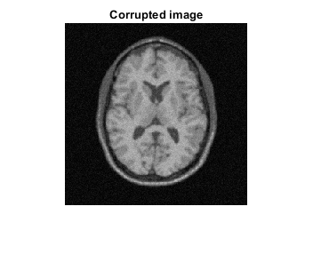
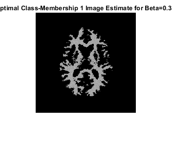
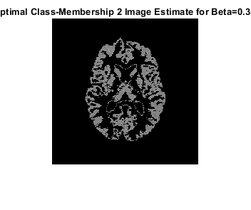
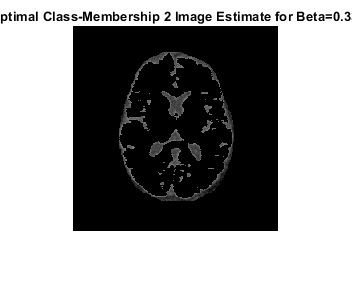
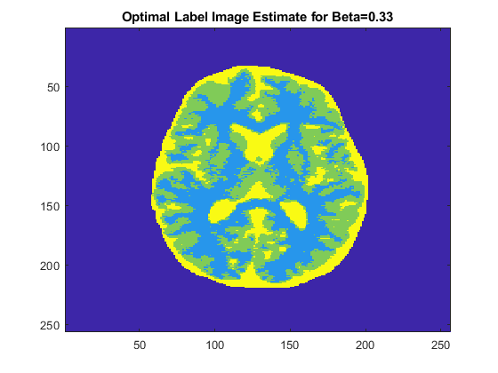
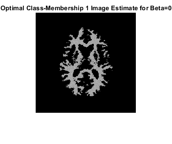
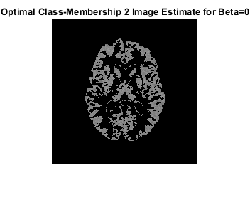
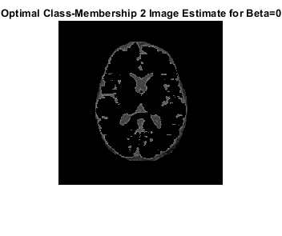

clc;
clear;
load('../data/assignmentSegmentBrainGmmEmMrf.mat');
foreground_pixels = imageData(logical(imageMask));
[L, centers] = kmeans(foreground_pixels,3);
label_Image = zeros(size(imageData));
label_Image(logical(imageMask)) = L;
x_init = label_Image;
u_init = centers;
sigma_init = zeros(3,1);
for i=1:3
data = foreground_pixels(L==i);
u_init(i) = mean(data);
sigma_init(i) = std(data);
end
num_iter = 200;
x = x_init;
y = imageData.*imageMask;
u = u_init;
sigma = sigma_init;
epsilon = 1e-4;
beta = 0.33;
for i=1:num_iter
logPosterior_beforeICM = log_Posterior(x, y, u, sigma, imageMask, beta);
fprintf('Log Posterior Value before ICM update %d = %f\n',i,logPosterior_beforeICM);
class_mem = class_Memberships(x, y, u, sigma, imageMask, beta);
[~,M] = max(class_mem,[],3);
x_update = M.*imageMask;
logPosterior_afterICM = log_Posterior(x_update, y, u, sigma, imageMask, beta);
fprintf('Log Posterior Value after ICM update %d = %f\n',i,logPosterior_afterICM);
if(abs(logPosterior_afterICM - logPosterior_beforeICM) < epsilon)
break;
end
for j=1:3
sum_gamma = sum(sum(class_mem(:,:,j)));
u(j) = sum(sum(class_mem(:,:,j).*y));
u(j) = u(j)/sum_gamma;
sigma(j) = sqrt(sum(sum((class_mem(:,:,j).*(((y-u(j)).*imageMask).^2))))/sum_gamma);
end
x = x_update;
end
x_beta = x;
x_cm_beta_1 = zeros(size(x));
x_cm_beta_2 = zeros(size(x));
x_cm_beta_3 = zeros(size(x));
x_cm_beta_1(x_beta==1) = imageData(x_beta==1);
x_cm_beta_2(x_beta==2) = imageData(x_beta==2);
x_cm_beta_3(x_beta==3) = imageData(x_beta==3);
num_iter = 200;
x = x_init;
y = imageData.*imageMask;
u = u_init;
sigma = sigma_init;
epsilon = 1e-4;
beta = 0;
for i=1:num_iter
logPosterior_beforeICM = log_Posterior(x, y, u, sigma, imageMask, beta);
fprintf('Log Posterior Value before ICM update %d = %f\n',i,logPosterior_beforeICM);
class_mem = class_Memberships(x, y, u, sigma, imageMask, beta);
[~,M] = max(class_mem,[],3);
x_update = M.*imageMask;
logPosterior_afterICM = log_Posterior(x_update, y, u, sigma, imageMask, beta);
fprintf('Log Posterior Value after ICM update %d = %f\n',i,logPosterior_afterICM);
if(abs(logPosterior_afterICM - logPosterior_beforeICM) < epsilon)
break;
end
for j=1:3
sum_gamma = sum(sum(class_mem(:,:,j)));
u(j) = sum(sum(class_mem(:,:,j).*y));
u(j) = u(j)/sum_gamma;
sigma(j) = sqrt(sum(sum((class_mem(:,:,j).*(((y-u(j)).*imageMask).^2))))/sum_gamma);
end
x = x_update;
end
x_beta_zero = x;
x_cm_zero_1 = zeros(size(x));
x_cm_zero_2 = zeros(size(x));
x_cm_zero_3 = zeros(size(x));
x_cm_zero_1(x_beta==1) = imageData(x_beta==1);
x_cm_zero_2(x_beta==2) = imageData(x_beta==2);
x_cm_zero_3(x_beta==3) = imageData(x_beta==3);
pause(0.1);
figure();
imshow(imageData);
title("Corrupted image");
pause(0.1);
figure();
imshow(x_cm_beta_1);
title("Optimal Class-Membership 1 Image Estimate for Beta=0.33 ");
pause(0.1);
figure();
imshow(x_cm_beta_2);
title("Optimal Class-Membership 2 Image Estimate for Beta=0.33 ");
pause(0.1);
figure();
imshow(x_cm_beta_3);
title("Optimal Class-Membership 2 Image Estimate for Beta=0.33 ");
pause(0.1);
figure();
imagesc(x_beta);
title("Optimal Label Image Estimate for Beta=0.33");
pause(0.1);
figure();
imshow(x_cm_zero_1);
title("Optimal Class-Membership 1 Image Estimate for Beta=0");
pause(0.1);
figure();
imshow(x_cm_zero_2);
title("Optimal Class-Membership 2 Image Estimate for Beta=0");
pause(0.1);
figure();
imshow(x_cm_zero_3);
title("Optimal Class-Membership 2 Image Estimate for Beta=0");
pause(0.1);
figure();
imagesc(x_beta_zero);
title("Optimal Label Image Estimate for Beta=0");
Log Posterior Value before ICM update 1 = 51645.134703
Log Posterior Value after ICM update 1 = 7488.674670
Log Posterior Value before ICM update 2 = 47952.511771
Log Posterior Value after ICM update 2 = 20953.643341
Log Posterior Value before ICM update 3 = 48016.444683
Log Posterior Value after ICM update 3 = 29380.636444
Log Posterior Value before ICM update 4 = 51264.676254
Log Posterior Value after ICM update 4 = 35276.870646
Log Posterior Value before ICM update 5 = 52345.381762
Log Posterior Value after ICM update 5 = 40135.502975
Log Posterior Value before ICM update 6 = 53932.669754
Log Posterior Value after ICM update 6 = 43674.491944
Log Posterior Value before ICM update 7 = 54733.441756
Log Posterior Value after ICM update 7 = 44855.888257
Log Posterior Value before ICM update 8 = 53883.023880
Log Posterior Value after ICM update 8 = 46539.873538
Log Posterior Value before ICM update 9 = 53939.437138
Log Posterior Value after ICM update 9 = 47948.811994
Log Posterior Value before ICM update 10 = 53774.684015
Log Posterior Value after ICM update 10 = 49712.679786
Log Posterior Value before ICM update 11 = 54390.102240
Log Posterior Value after ICM update 11 = 51014.535482
Log Posterior Value before ICM update 12 = 54725.433313
Log Posterior Value after ICM update 12 = 52548.376725
Log Posterior Value before ICM update 13 = 55270.842838
Log Posterior Value after ICM update 13 = 53902.078233
Log Posterior Value before ICM update 14 = 55786.946577
Log Posterior Value after ICM update 14 = 54588.671058
Log Posterior Value before ICM update 15 = 56031.790992
Log Posterior Value after ICM update 15 = 54955.263332
Log Posterior Value before ICM update 16 = 56041.235718
Log Posterior Value after ICM update 16 = 55111.996384
Log Posterior Value before ICM update 17 = 56092.340233
Log Posterior Value after ICM update 17 = 55749.555922
Log Posterior Value before ICM update 18 = 56470.759779
Log Posterior Value after ICM update 18 = 56114.268678
Log Posterior Value before ICM update 19 = 56605.444882
Log Posterior Value after ICM update 19 = 56302.873376
Log Posterior Value before ICM update 20 = 56701.665844
Log Posterior Value after ICM update 20 = 56480.175291
Log Posterior Value before ICM update 21 = 56779.888219
Log Posterior Value after ICM update 21 = 56638.079009
Log Posterior Value before ICM update 22 = 56844.583104
Log Posterior Value after ICM update 22 = 56844.583104
Log Posterior Value before ICM update 1 = 42736.117876
Log Posterior Value after ICM update 1 = -8088.143875
Log Posterior Value before ICM update 2 = 40859.108857
Log Posterior Value after ICM update 2 = 11208.852586
Log Posterior Value before ICM update 3 = 45559.200733
Log Posterior Value after ICM update 3 = 20110.447049
Log Posterior Value before ICM update 4 = 48041.475443
Log Posterior Value after ICM update 4 = 28647.383714
Log Posterior Value before ICM update 5 = 52010.242552
Log Posterior Value after ICM update 5 = 34702.876517
Log Posterior Value before ICM update 6 = 53962.482842
Log Posterior Value after ICM update 6 = 38900.183279
Log Posterior Value before ICM update 7 = 54281.447947
Log Posterior Value after ICM update 7 = 42622.688868
Log Posterior Value before ICM update 8 = 54515.995701
Log Posterior Value after ICM update 8 = 44964.658352
Log Posterior Value before ICM update 9 = 53949.342236
Log Posterior Value after ICM update 9 = 47607.207641
Log Posterior Value before ICM update 10 = 54328.978292
Log Posterior Value after ICM update 10 = 50396.068672
Log Posterior Value before ICM update 11 = 55430.135840
Log Posterior Value after ICM update 11 = 51600.772722
Log Posterior Value before ICM update 12 = 55379.060470
Log Posterior Value after ICM update 12 = 52926.037589
Log Posterior Value before ICM update 13 = 55780.817815
Log Posterior Value after ICM update 13 = 53689.792071
Log Posterior Value before ICM update 14 = 55855.855691
Log Posterior Value after ICM update 14 = 53479.540839
Log Posterior Value before ICM update 15 = 55126.262947
Log Posterior Value after ICM update 15 = 53866.349666
Log Posterior Value before ICM update 16 = 55122.640476
Log Posterior Value after ICM update 16 = 53975.468866
Log Posterior Value before ICM update 17 = 54933.660441
Log Posterior Value after ICM update 17 = 54134.777310
Log Posterior Value before ICM update 18 = 54865.922867
Log Posterior Value after ICM update 18 = 54314.611380
Log Posterior Value before ICM update 19 = 54872.531111
Log Posterior Value after ICM update 19 = 54096.000829
Log Posterior Value before ICM update 20 = 54521.330303
Log Posterior Value after ICM update 20 = 54446.334563
Log Posterior Value before ICM update 21 = 54770.766027
Log Posterior Value after ICM update 21 = 54344.646064
Log Posterior Value before ICM update 22 = 54591.870557
Log Posterior Value after ICM update 22 = 54339.822100
Log Posterior Value before ICM update 23 = 54528.204136
Log Posterior Value after ICM update 23 = 54227.928316
Log Posterior Value before ICM update 24 = 54371.414169
Log Posterior Value after ICM update 24 = 54071.090043
Log Posterior Value before ICM update 25 = 54180.361926
Log Posterior Value after ICM update 25 = 54180.361926
       